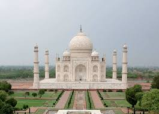
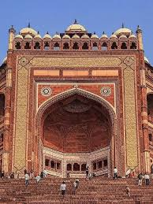

Agra, located in the state of Uttar Pradesh, is a globally renowned tourist destination famous for its magnificent Mughal-era architecture. It attracts millions of travelers every year who come to explore its rich history, vibrant culture, and world-famous monuments.
| Place Name | Description | Official/Booking Link |
|---|---|---|
| Taj Mahal | A majestic ivory-white marble mausoleum and one of the Seven Wonders of the World. | Book Taj Mahal Tickets |
| Agra Fort | A massive 16th-century Mughal red sandstone fortress. | Agra Fort Info |
| Fatehpur Sikri | A splendid fortified city that was once the capital of the Mughal Empire. | Fatehpur Sikri Details |
| Itmad-ud-Daula | An ornate mausoleum often referred to as the 'Baby Taj'. | Itmad-ud-Daula Link |
| Mehtab Bagh | A charbagh-style garden complex offering a stunning view of the Taj Mahal. | Mehtab Bagh Info |
| Tomb of Akbar | The grand resting place of the Mughal Emperor Akbar. | Akbar's Tomb Info |
| Jama Masjid | One of the largest mosques built in India, located facing the Agra Fort. | Jama Masjid Info |
| Anguri Bagh | A historic courtyard inside the Agra Fort with a beautiful, geometric layout. | Anguri Bagh Info |
| Gurudwara Guru Ka Taal | A prominent and historic Sikh pilgrimage center. | Gurudwara Info |
| Chini Ka Rauza | A mausoleum dedicated to Afzal Khan, a scholar and poet. | Chini Ka Rauza Info |
Explore the stunning visuals of Agra's heritage.


